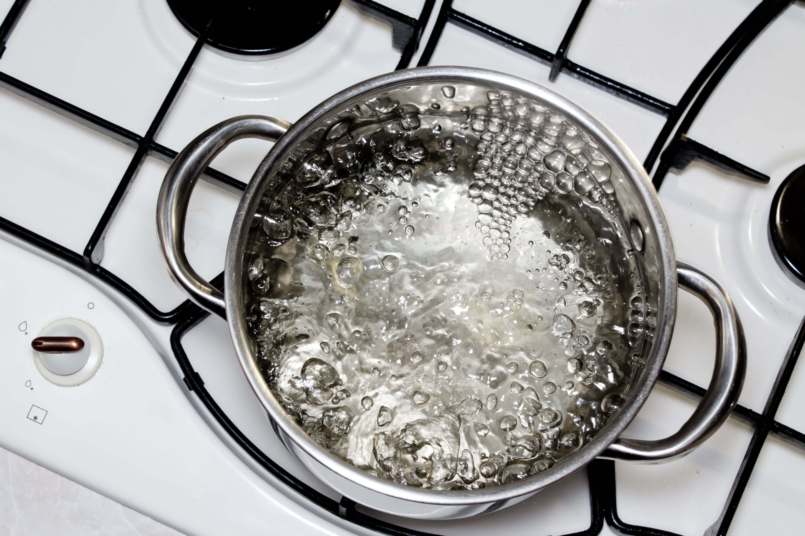

Introduction
Welcome to SciWorld, a free online resource for SPM Form 5 Science (Sains) students. Our site provides concise revision notes, interactive quizzes, and illustrative diagrams aligned with the Malaysian KSSM syllabus. The SPM (Sijil Pelajaran Malaysia) is the national examination for Form 5 students, and the science curriculum covers topics like microorganisms, nutrition, environmental conservation, carbon compounds, and more. Use the navigation menu to explore chapters, quizzes, and other resources.
Chapters Overview

Chapter 1: Microorganisms

Chapter 2: Nutrition & Food

Chapter 3: Environment Sustainability

Chapter 4: Rate of Reaction

Chapter 5: Carbon Compound

Chapter 6: Electrochemical

Chapter 7: Light and Optics

Chapter 8: Space Technology
Key Features
- Comprehensive revision notes for all Form 5 Science topics
- Interactive quizzes for self-testing and exam practice
- Visual diagrams and images to illustrate complex concepts
- Content updated to match the latest SPM curriculum